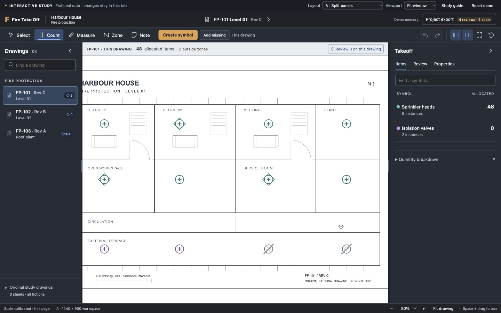
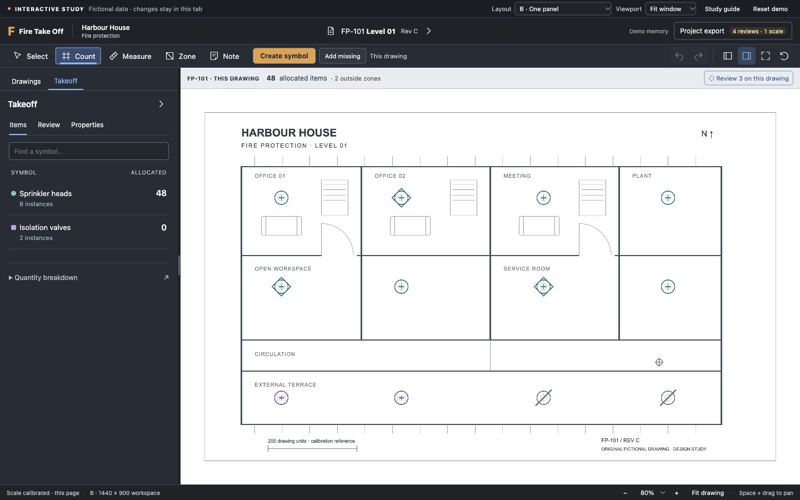
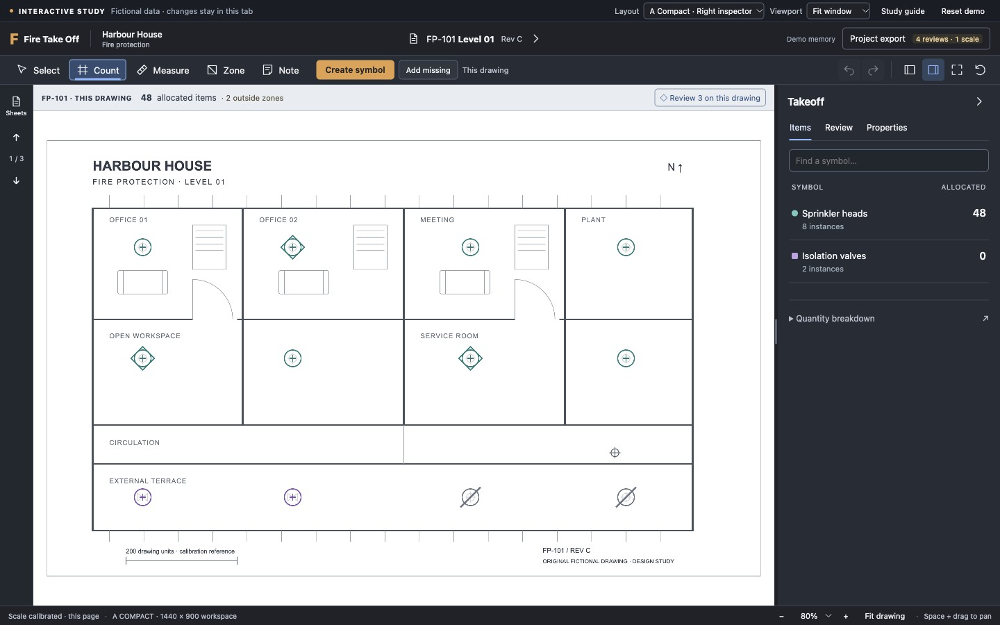
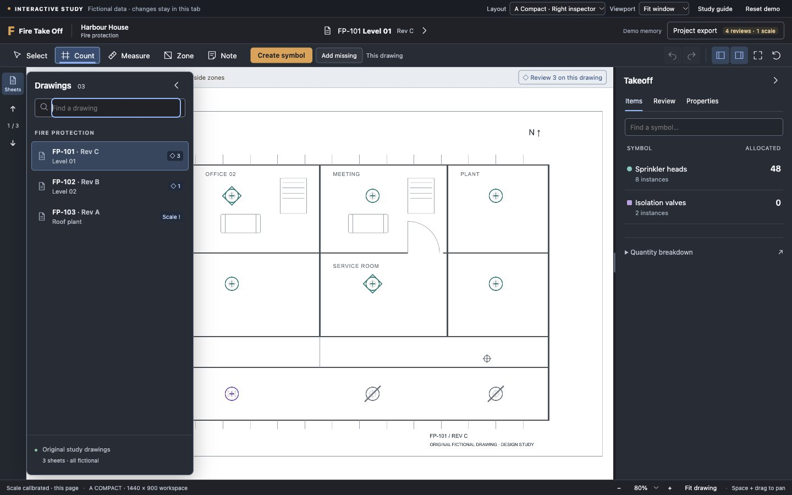

Actual 1440×900 CSS-pixel captures, the same fictional FP-101 dataset, centred on the same drawing point at 80% zoom. Shared styling and default panel widths. Click a screenshot to inspect its original resolution.
Open interactive prototype →


Sheet-visible percentages measure the intersection of the white 1120×720 rendered sheet with the unobstructed canvas. They do not measure speed or usability. At1920×1080 all three show this entire sheet at80%; A then offers useful navigation without hiding more of the sheet.
| Viewport | A canvas | B canvas | A Compact canvas |
|---|---|---|---|
| 1280×800 | 718×612 | 955×612 | 907×612 |
| 1440×900 | 878×712 | 1115×712 | 1067×712 |
| 1920×1080 | 1358×892 | 1595×892 | 1547×892 |
It overlays the left drawing area while open. At1440 and80% zoom, unobstructed sheet visibility temporarily falls from94.21% to67.67%. The right inspector remains in place. Selecting a sheet, pressing Escape or clicking outside closes the chooser; canvas zoom/position are retained. For frequent sheet hopping, use previous/next or choose full A.

This is layout validation, not a PDF engine or a claim of Countfire workflow parity. Recognition, counting data and export are fictional demonstrations. Production code and saved projects are disconnected.